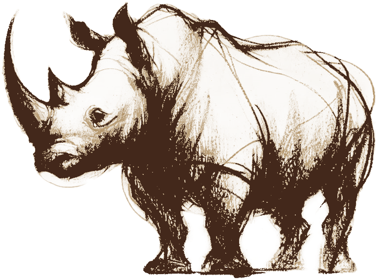

Průběh spolupráce
Naposledy aktualizováno: 11. 7. 2026Hotový máme audit, měření, ověřený profil na Googlu i technické SEO. Klíčová slova jste odsouhlasil, takže teď zapracováváme nové texty na jednotlivé stránky a zároveň stavíme nový rezervační systém přímo na Vašem webu. Celý plán po fázích najdete níže, kliknutím každou fázi rozbalíte.
Rozbalená je fáze, na které právě pracujeme. Hotové a budoucí fáze jsou sbalené, kliknutím je otevřete.